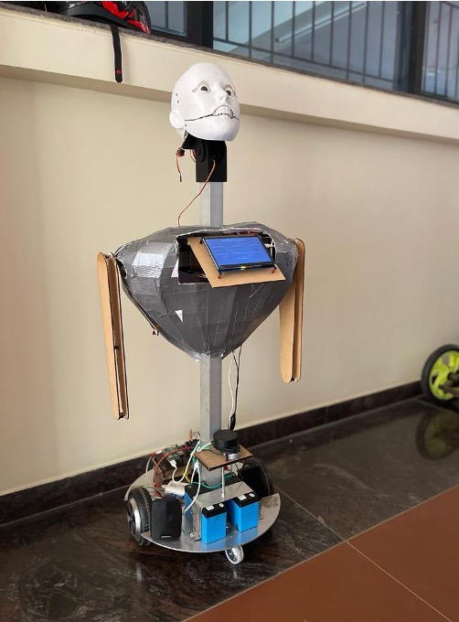

Introduction
Students often struggle to find resources in large libraries, while faculty members face challenges in managing inventory and ensuring materials are properly shelved.
This project addresses these issues by developing a robot that can guide students and library faculty members through the library collection. Using the ROS 1 framework(Noetic), the robot features a humanoid face capable of recognizing facial expressions and mimicking emotions, enabling empathetic and personalized assistance.

Key Features
- Resource Recommendations: Helps students find relevant resources based on search queries.
- Inventory Management: Assists faculty in restacking misplaced books.
- Facial Recognition: Detects user frustration and offers emotional support.
Benefits
- Saves students time and reduces stress.
- Improves library workflow efficiency.
- Showcases innovative AI applications in education.
Skills
- ROS Framework
- Python and CPP Programming
- Facial Recognition and AI
- Robotics Design and Development
- Emotion Detection Algorithms
- SLAM Algorithms
- Embedded Programming
Media

Comments